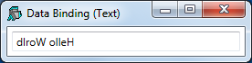

This example illustrates data binding using XAML to specify the user-interface coupled with an APL function to drive it and handle the data binding.
The XAML shown below, describes a Window containing a TextBox.
<Window
xmlns="http://schemas.microsoft.com/winfx/2006/xaml/presentation"
xmlns:x="http://schemas.microsoft.com/winfx/2006/xaml"
Name="Temp"
Title="Data Binding (Text)"
SizeToContent="WidthandHeight">
<TextBox Name="txt" Width="300" Margin="5"
Text="{Binding txtSource,Mode=TwoWay,
UpdateSourceTrigger=PropertyChanged}"/>
</Window>It contains a data binding expressions, namely:
Text="{Binding txtSource,Mode=TwoWay,
UpdateSourceTrigger=PropertyChanged}"This specifies that the Text property of the TextBox is bound to a value in the Binding Source (which has yet to be defined) whose path is txtSource. The binding mode is set to TwoWay which means that any change in the TextBox will be reflected in a new value in the Binding Source, and vice-versa. The value in the Binding Source will be updated when the property (in this case the Text Property) changes.
Th function Text which generates this example is shown below.
The argument txt is the text to be displayed initially in the TextBox. Note that the variable XAML_Text contains the XAML that describes the user-interface listed above.
∇ Text txt;⎕USING;str;xml;win
[1] ⎕USING←,⊂'System.Windows.Controls,WPF/PresentationFramework.dll'
[2] win←LoadXAML XAML
[3] win.txtBox←win.FindName⊂'txt'
[4]
[5] ⎕EX'txtSource'
[6] txtSource←txt
[7] win.txtBox.DataContext←2015⌶'txtSource'
[8]
[9] win.Show
∇
The utility function LoadXAML incorporates the 3 lines of code, used to create a WPF window from XAML, that were coded in-line in previous examples in this chapter.
∇ win←LoadXAML xaml;⎕USING;str;xml
[1] ⎕USING←'System.IO'
[2] ⎕USING,←⊂'System.Windows.Markup'
[3] ⎕USING,←⊂'System.Xml,system.xml.dll'
[4] ⎕USING,←⊂'System.Windows.Controls,
WPF/PresentationFramework.dll'
[5] str←⎕NEW StringReader(⊂xaml)
[6] xml←⎕NEW XmlTextReader str
[7] win←XamlReader.Load xml
∇
Text[1] defines the .Net search path needed to access the WPF controls.
[1] ⎕USING←,⊂'System.Windows.Controls,WPF/PresentationFramework.dll'
Text[2-3] uses the utility function LoadXAML to load a WPF user-interface from the XAML and then uses the FindName method to obtain a reference to the object named txt.
[2] win←LoadXAML XAML [3] win.txtBox←win.FindName⊂'txt'
Text[5-6] initialise a new global variable named txtSource to the value of the argument. When using a global variable as a data binding source, it is generally advisable to establish a new variable by first expunging it.1
[5] ⎕EX'txtSource' [6] txtSource←txt
Text[7]creates a Binding Source object using 2015⌶ and assigns it to the DataContext property of the TextBox object. Because it is a character vector, the exported Type for the bound variable txtSource is System.String which is appropiate for the Text property of a TextBox.
[7] win.txtBox.DataContext←2015⌶'txtSource'
Text[9] displays the Window. Note that although the APL local variable win goes out of scope when the function terminates, the Window remains visible until the user has closed it.
[9] win.Show
The following expressions may be used to explore the effect of data binding.
)LOAD WPFIntro
)CS DataBinding.TextText 'Hello World'
txtSource←⌽txtSource

Typing into the TextBox changes the value of the bound variable.
txtSource What is in txtSource now?